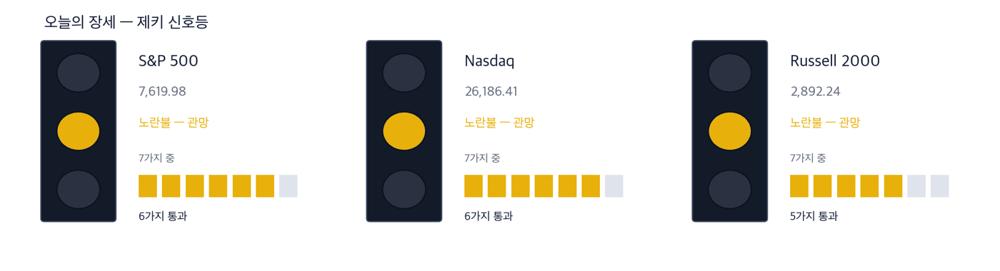
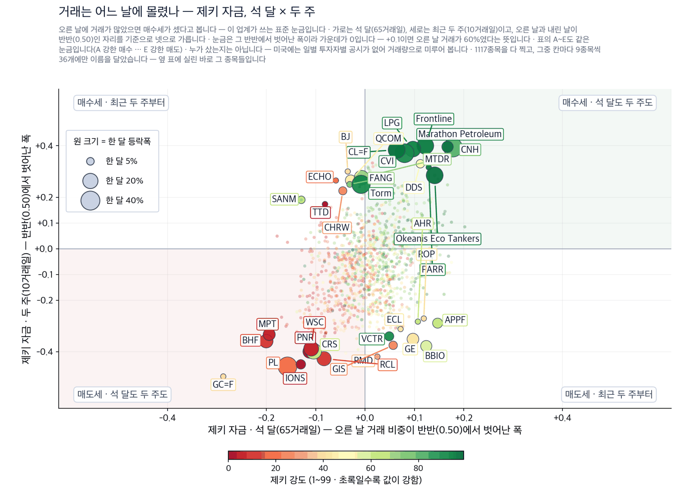
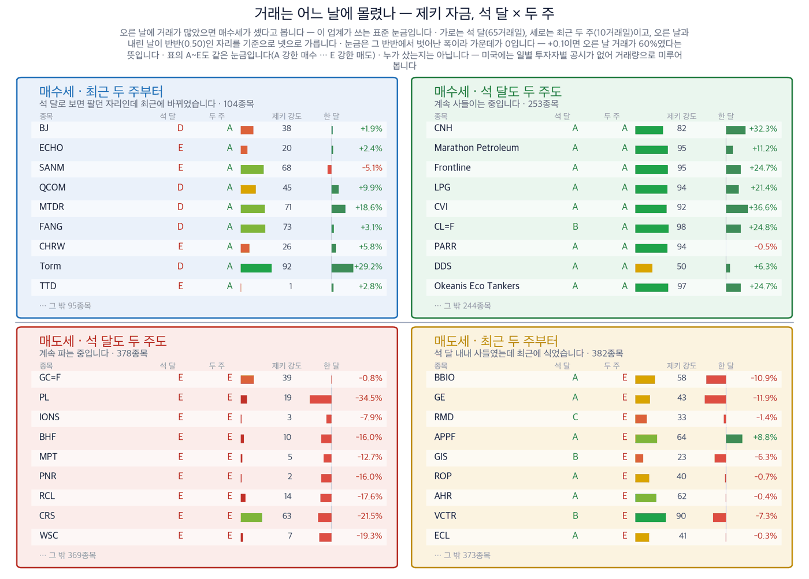
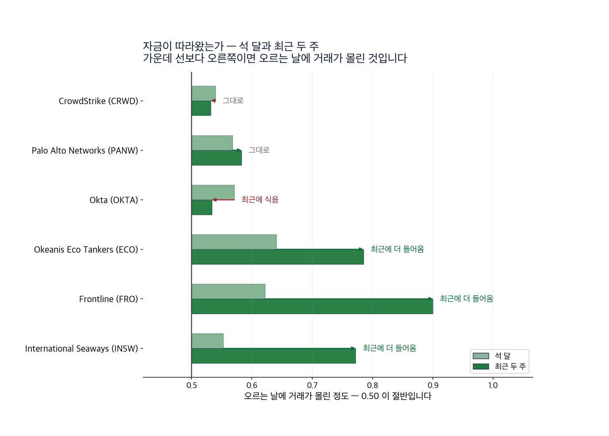

S&P 500 7,619.98 (-0.48%) | 나스닥 26,186.41 (-0.56%) | 다우 52,421.20 (-0.29%) | 미 국채 10년물 4.96% | 제키 신호등 노란불 |

| 켜진 등 | 오늘의 국면입니다. 초록은 매수 우위, 노랑은 관망, 빨강은 매수 자제입니다. |
| 채워진 칸 | 7가지 조건 중 몇 개를 통과했는지입니다. 칸이 많이 찰수록 시장 구조가 튼튼합니다. |
| 칸이 다 찼는데 노랑·빨강이면 | 다른 이유로 한 단계 낮춘 것입니다. 그림 아래에 그 이유를 적었습니다. |
제키 신호등은 저희가 시장을 7가지 기준으로 재서 하나의 등으로 바꾼 것입니다. 초록불은 매수 우위, 노란불은 관망, 빨간불은 매수 자제입니다. 9월 14일 S&P 500과 나스닥은 7가지 가운데 6가지를 통과해 노란불입니다.
9월 14일 뉴욕 증시에서 3대 지수가 모두 내렸습니다. 그런데 시장이 통째로 내린 것은 아닙니다.
미국 10년물 국채금리가 장중 5%를 넘었습니다. 2007년 이후 처음입니다. 돈은 인공지능 설비를 파는 회사에서 빠져나왔습니다. 그 돈이 간 곳은 보안 소프트웨어와 유조선이었습니다.
두 곳을 밀어 올린 힘은 하나입니다. 중동에서 원유가 지나는 길이 좁아진 것, 그리고 인공지능에 대한 불안입니다. 같은 두 가지가 9월 16일 연방준비제도가 금리를 올릴 이유이기도 합니다. (Wall Street Journal)
1. 인공지능 개발을 늦추자는 요구가 보안 예산을 키웠습니다. 연구자들이 가장 크게 걱정한 것이 보안이었기 때문입니다. 크라우드스트라이크는 9월 14일 13.9% 올라 52주 신고가에서 마쳤습니다.
2. 원유가 지나는 두 번째 길목이 막혔습니다. 배가 멀리 돌아가면 같은 화물에 더 오랜 시간이 들고, 쓸 수 있는 배가 줄어듭니다. 유조선 3종목이 모두 52주 신고가 부근에서 마쳤습니다.
3. 같은 날 정유주는 내렸습니다. 유조선은 멀어진 뱃길에서 벌고, 정유사는 원유를 더 비싸게 사 옵니다. 발레로는 1.9%, 필립스66은 0.9% 내렸습니다.
| 날짜 | 무엇을 보는가 | 넘으면 어떻게 되는가 |
|---|---|---|
| 9월 16일 (수) | 연방공개시장위원회 금리 결정 | 0.25%p 올릴 확률이 92%입니다. 올리면 10년물 금리가 높은 자리에 머물 가능성이 커집니다 |
| 9월 16일 (수) | 8월 소매판매 | 0.7% 증가 예상입니다. 7월은 0.6% 감소였습니다. 예상을 웃돌면 물가 부담이 다시 커집니다 |
| 9월 17일 (목) | 8월 주택착공 | 131만 5,000호 예상입니다. 7월 124만 호보다 많습니다 |
| 9월 18일 (금) | 8월 경기선행지수 | 0.1% 증가 예상입니다. 7월은 0.2% 증가였습니다 |
인공지능을 만드는 사람들이 직접 속도를 늦추자고 했습니다. 앤스로픽·오픈AI·xAI·구글 딥마인드의 대표들이 같은 날 같은 말을 했습니다.
인공지능이 보안을 무너뜨릴 수 있다는 걱정이 가장 컸습니다. 그래서 9월 14일 뉴욕 증시에서 상승률 1위가 보안 소프트웨어였습니다. 반대로 설비를 파는 회사는 팔렸습니다. 코닝·테러다인·코히어런트가 12% 넘게 내렸습니다.
테마 1 · 보안 소프트웨어
출처: Wall Street Journal · Investor's Business Daily
정리하면 거래량이 50일 평균의 2.7배로 늘면서 52주 신고가에서 마쳤습니다. 확인 신호 — 9월 14일 종가 235.38달러를 이번 주 안에 지키면서, 거래가 50일 평균을 넘는 날이 한 번 더 나오는 것입니다. 철회 기준 — 9월 11일 종가 206.74달러 아래로 되돌아가면 월요일에 오른 폭이 지워집니다. |
테마 1 · 보안 소프트웨어
출처: Wall Street Journal
정리하면 하루 상승폭은 크라우드스트라이크와 비슷합니다. 다만 한 달 전 값보다는 5.6% 낮습니다. 확인 신호 — 9월 14일 종가 373.94달러 위에서 한 달 전 값을 회복하는 것입니다. 철회 기준 — 한 달 하락폭이 더 벌어지면 하루 반등에 그친 것으로 봅니다. |
테마 1 · 보안 소프트웨어
출처: Investor's Business Daily
정리하면 한 달 20.3% 올랐습니다. 다만 최근 두 주에는 자금이 식었습니다. 확인 신호 — 9월 14일 종가 186.45달러 위에서 최근 두 주의 자금 등급이 A로 돌아오는 것입니다. 철회 기준 — 9월 14일 종가를 내주면 신고가 돌파가 하루짜리였다는 뜻이 됩니다. |
유조선 값을 올린 것은 유가가 아니라 거리입니다. 배가 멀리 돌아가면 같은 화물을 옮기는 데 더 오래 걸립니다. 그만큼 쓸 수 있는 배가 줄고 운임이 오릅니다.
같은 날 정유주가 내린 것이 이 차이를 보여 줍니다. 유조선 회사는 길이 멀어질수록 벌고, 정유사는 원유를 더 비싸게 사 와야 합니다.
테마 2 · 유조선
출처: Wall Street Journal · Investor's Business Daily
정리하면 한 달 24.7% 올랐습니다. 최근 두 주에는 매수세가 더 우세했습니다. 확인 신호 — 9월 14일 종가 79.72달러 위에서 이번 주를 마치는 것입니다. 철회 기준 — 해상 길목이 다시 열렸다는 소식이 나오면 운임 전제가 사라집니다. |
테마 2 · 유조선
출처: Wall Street Journal · Investor's Business Daily
정리하면 한 달 상승폭이 오케아니스 에코 탱커스와 같습니다. 확인 신호 — 9월 14일 종가 50.52달러 위에서 거래가 50일 평균을 넘는 날이 이어지는 것입니다. 철회 기준 — 9월 14일 종가를 밑도는 날이 사흘 이어지면 최근 두 주의 매수세 우세가 사라진 것으로 봅니다. |
테마 2 · 유조선
출처: Wall Street Journal · Investor's Business Daily
정리하면 한 달 16.9%로 3종목 가운데 가장 완만합니다. 확인 신호 — 9월 14일 종가 105.84달러 위에서 석 달 자금 등급이 A로 올라서는 것입니다. 철회 기준 — 9월 14일 종가 아래에서 거래가 줄면 뒤늦게 따라 오른 것으로 봅니다. |
기사가 그럴듯해도 값이 따라오지 않으면 종목으로 만들지 않습니다. 오늘은 2가지를 제외했습니다.
| 제외한 테마 | 기사가 말한 것 | 값을 재 보면 |
|---|---|---|
| 제외 초대형 클라우드 3사 | 마이크로소프트·알파벳·메타가 9월 14일 모두 2% 넘게 올랐습니다 | 하루는 올랐지만 제키 강도가 각각 69·60·49입니다. 석 달을 이끈 종목이 아닙니다 |
| 제외 전력·발전 | 넥스트에라에너지가 2026년 이익 전망을 상단으로 유지했고, 환경보호청이 발전소 탄소 규제를 되돌린다고 했습니다 | 넥스트에라에너지는 9월 14일 0.8% 내렸습니다. 제키 강도 34에 52주 고점 대비 15.4% 아래입니다 |
| 테마 | 종목 | 제키 강도 | 근거의 무게 |
|---|---|---|---|
| 테마 1 · 보안 소프트웨어 | 크라우드스트라이크(CRWD) | 95 | 근거 확실 |
| 팔로알토네트웍스(PANW) | 94 | 근거 있음 | |
| 옥타(OKTA) | 96 | 근거 있음 | |
| 테마 2 · 유조선 | 오케아니스 에코 탱커스(ECO) | 97 | 근거 확실 |
| 프론트라인(FRO) | 95 | 근거 확실 | |
| 인터내셔널 시웨이스(INSW) | 96 | 근거 확실 |
| 종목 | ①값이 올랐나 | ②강도 90↑ | ③자금 석 달 A~B | ④두 주 안 꺾임 | 충족 | 근거의 무게 |
|---|---|---|---|---|---|---|
| 크라우드스트라이크(CRWD) | O | O | O | O | 4/4 | 근거 확실 |
| 팔로알토네트웍스(PANW) | X | O | O | O | 3/4 | 근거 있음 |
| 옥타(OKTA) | O | O | O | X | 3/4 | 근거 있음 |
| 오케아니스 에코 탱커스(ECO) | O | O | O | O | 4/4 | 근거 확실 |
| 프론트라인(FRO) | O | O | O | O | 4/4 | 근거 확실 |
| 인터내셔널 시웨이스(INSW) | O | O | O | O | 4/4 | 근거 확실 |
미국에는 누가 샀는지 날마다 공시하는 자료가 없습니다. 그래서 오르는 날에 거래가 몰렸는지로 미루어 봅니다. 9월 14일 종가 기준으로 1,117종목을 쟀습니다.

| 점 하나 | 종목 하나입니다. 가로·세로 위치가 두 값을 그대로 나타내고, 가운데 가로·세로로 그어진 두 선이 기준선입니다. 네 귀퉁이의 이름표가 그 칸의 뜻입니다. |
| 점 크기 | 최근 한 달 등락폭입니다. 오르든 내리든 크게 움직였으면 큰 점입니다. |
| 점 색 | 제키 강도입니다. 초록일수록 주가가 시장에서 강합니다. |
| 30종목만 | 이름이 겹치면 못 읽기 때문입니다. 가운데 몰린 나머지는 움직임이 거의 없는 종목들이라 뺐습니다. |

| 네 칸 | 가로와 세로 두 값이 각각 기준선을 넘었는지로 넷을 가릅니다. 오른쪽 위는 둘 다 넘은 곳, 왼쪽 아래는 둘 다 못 넘은 곳, 나머지 두 칸은 한쪽만 넘은 곳입니다. 칸 이름이 그 칸에 든 종목의 상태를 한 문장으로 적어 둔 것입니다. |
| 가운데 두 칸 | 두 기간을 견주는 자리입니다. 글자 A~E가 있으면 이 업계가 쓰는 표준 등급으로, A는 강한 매수, B는 매수 우세, C는 매수와 매도가 반반, D는 매도 우세, E는 강한 매도를 뜻합니다(전체를 다섯으로 나눈 순위라 A가 상위 20%입니다). 숫자가 있으면 그 기간의 순매수 규모입니다. |
| 칸마다 9종목 | 그 칸에서 움직임이 가장 큰 순서입니다. 나머지는 칸 아래에 몇 종목인지만 적었습니다. 옆 산점도가 이름을 다는 종목이 바로 이 9종목씩입니다. |
| 한 달 막대 | 0을 가운데 두고 오른쪽이 상승, 왼쪽이 하락입니다. 길이는 같은 칸 안에서만 서로 견주십시오 — 칸마다 기준이 다릅니다. |
| 제키 강도 | 1~99 순위입니다. 막대가 길수록, 초록에 가까울수록 그 종목의 주가가 시장에서 강합니다. |
기사가 맞고 값이 올라도 자금은 따로 봅니다. 막대가 오른쪽으로 갈수록 오르는 날에 거래가 몰린 것입니다.

| 막대 둘 | 위가 석 달, 아래가 최근 두 주입니다. 같은 종목의 두 기간을 나란히 놓았습니다. |
| 가운데 선 | 0.50 입니다. 오른쪽이면 오르는 날에 거래가 더 몰렸고, 왼쪽이면 내리는 날에 몰렸습니다. |
| 화살표 | 석 달에서 두 주로 가는 방향입니다. 오른쪽으로 가면 최근에 더 들어온 것이고, 왼쪽이면 식은 것입니다. |
| 맨 오른쪽 글씨 | 그 방향을 말로 적은 것입니다 — 「최근에 더 들어옴」이면 자금이 이어지는 중입니다. |
유조선 3종목은 최근 두 주에 매수세가 더 우세했습니다. 보안 소프트웨어 가운데 옥타는 오히려 식었습니다. 그래서 옥타의 확인 신호를 자금 등급으로 잡았습니다.
| 근거의 무게 | 종목 | 오름 | 내림 | S&P 500보다 나음 | 평균 초과 |
|---|---|---|---|---|---|
| 아직 5거래일이 지난 종목이 없습니다. 실린 24종목은 기록되어 있고, 날이 차는 대로 여기에 셉니다. | |||||
| 언제 | 무엇을 볼 것인가 |
|---|---|
| 개장 30분 | 미국 10년물 국채금리가 9월 14일 마감값 4.96% 위로 다시 올라가는지 봅니다 |
| 장중 | 오늘은 연방공개시장위원회 회의 첫날이라 발표가 없습니다. 결정은 9월 16일에 나옵니다 |
| 마감 30분 | 보안 소프트웨어 3종목이 거래량을 지킨 채 마치는지 봅니다 |
9월 16일 금리 결정과 8월 소매판매가 같은 날 나옵니다. 9월 17일에는 주택 지표가, 9월 18일에는 경기선행지수가 나옵니다.
| 말 | 뜻 |
|---|---|
| 제키 강도 | 저희가 보는 미국 상장 1,146종목 가운데 값이 몇 등인지를 1~99로 매긴 것입니다 |
| 제키 자금 | 오르는 날에 거래가 얼마나 몰렸는지를 0~1로 잰 것입니다. 0.50이 절반입니다 |
| 제키 신호등 | 시장이 7가지 기준 가운데 몇 가지를 통과했는지를 등 하나로 바꾼 것입니다 |
| 근거의 무게 | 4가지를 세어 매긴 딱지입니다. 4가지를 다 채우면 근거 확실입니다 |